Part of the design team behind Citi's dashboard redesign, improving efficiency, discoverability, and digital engagement. Designed key features and flows that helped customers find and manage their accounts with less effort.
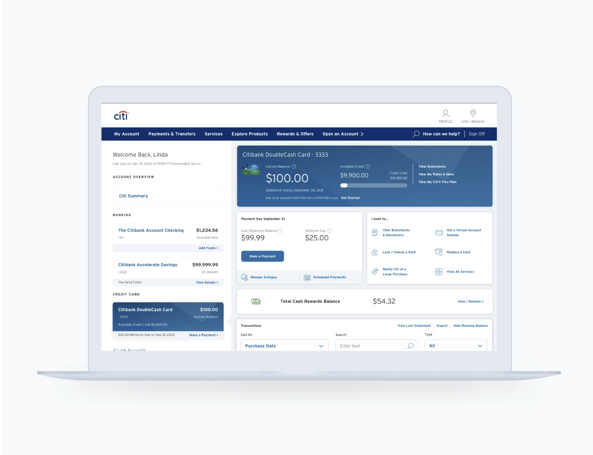
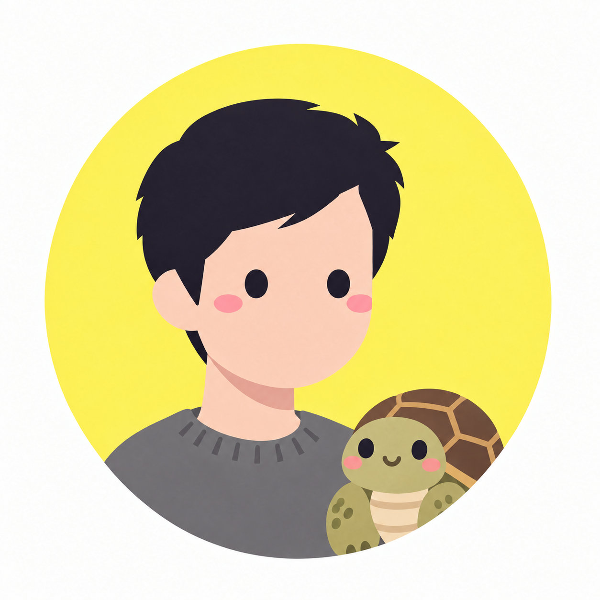
Based in Austin Texas
2023-2026
Led end-to-end UX for an enterprise Admin portal used to manage organizations, users, and operational oversight. Simplified complex administrative workflows into clear, scalable experiences.
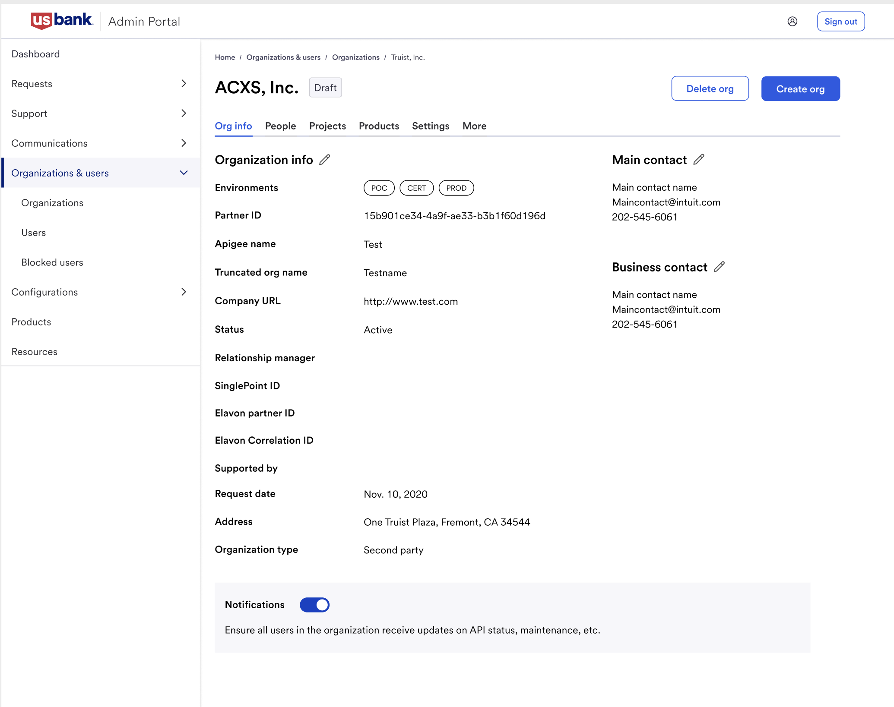
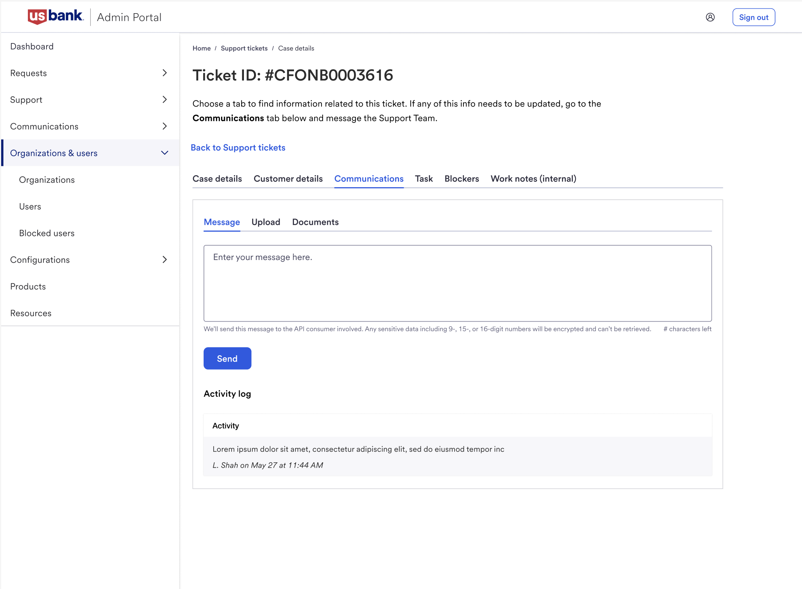
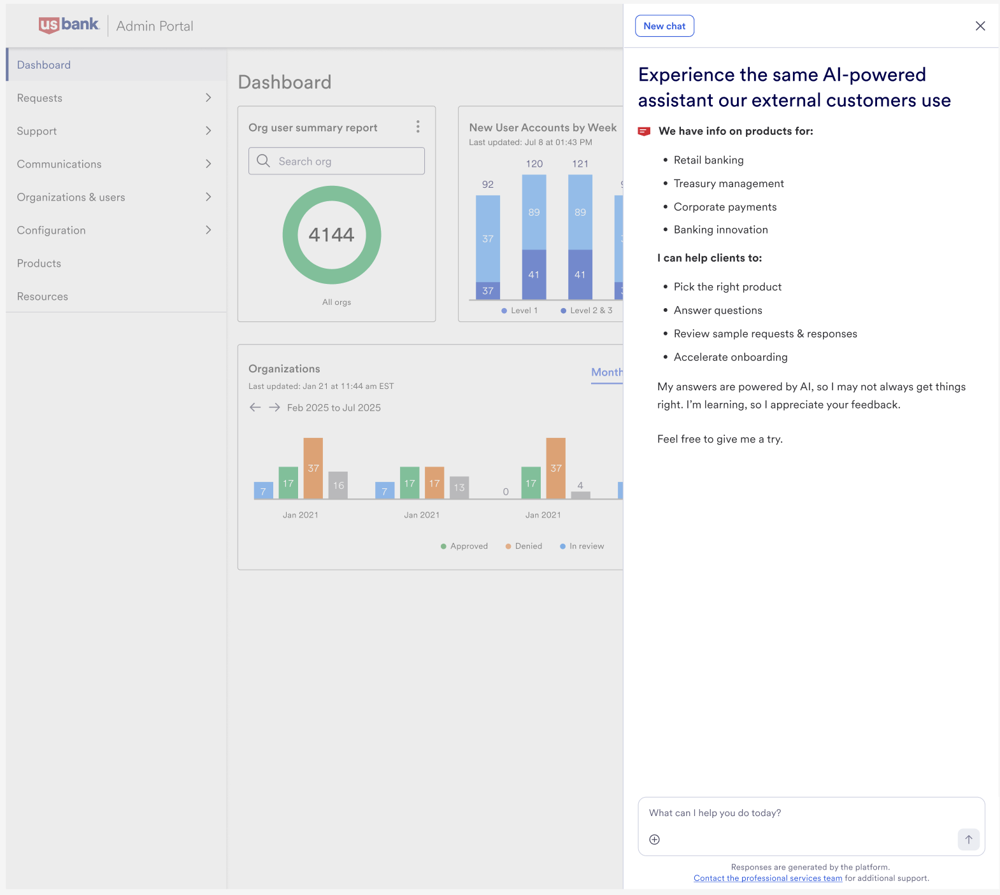
2021-2024
Designed an internal tool that lets product managers upload API specs and simulate responses before production. Led research and an in-product onboarding experience that cut the learning curve for infrequent users and reduced load on the support team.
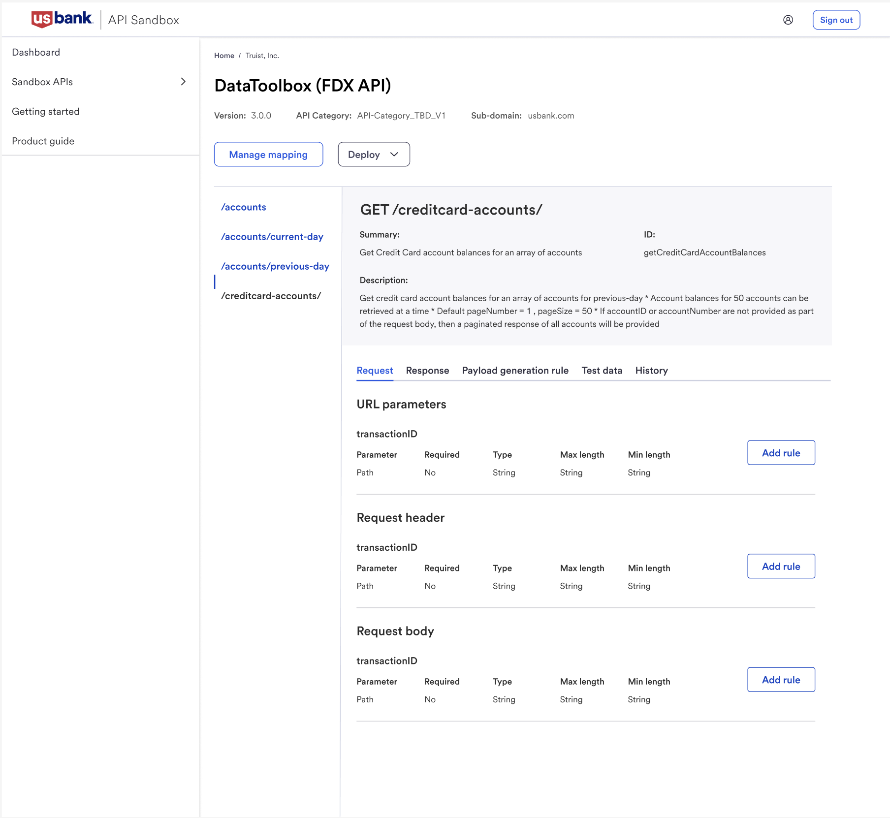
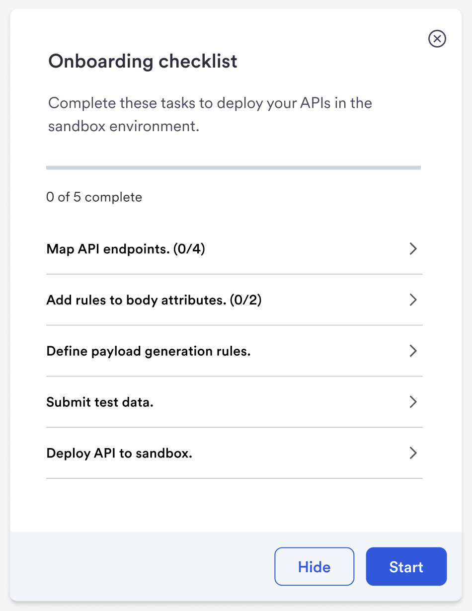
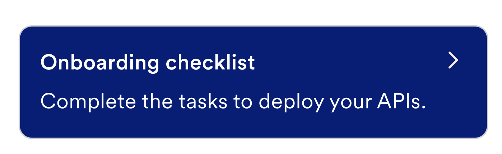
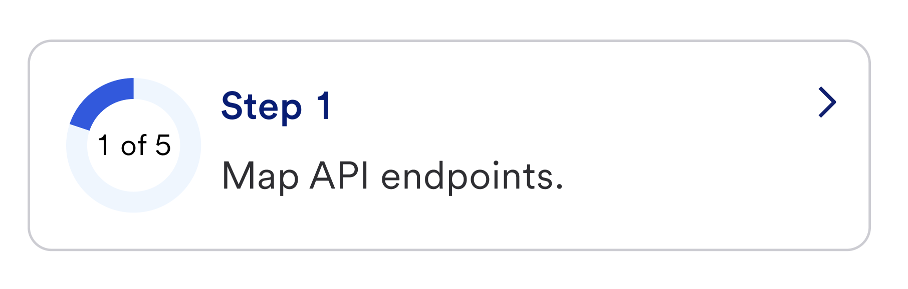
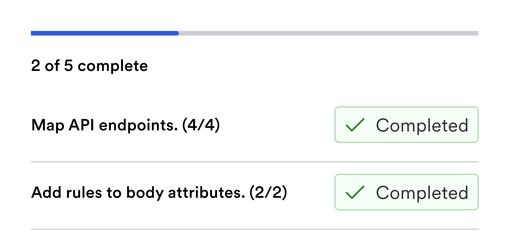
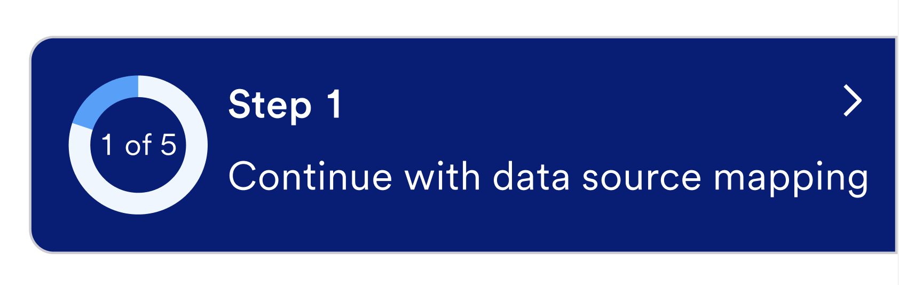
Part of the design team behind Citi's dashboard redesign, improving efficiency, discoverability, and digital engagement. Designed key features and flows that helped customers find and manage their accounts with less effort.
